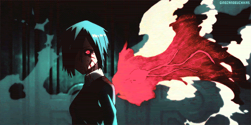
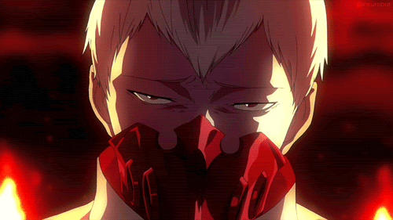
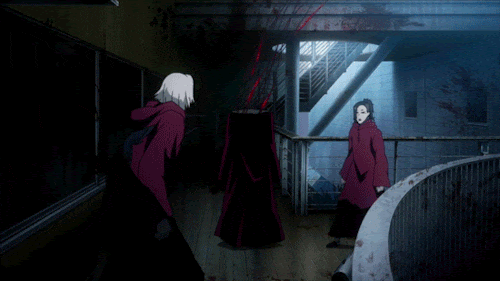
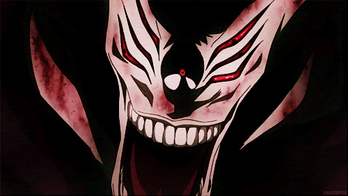
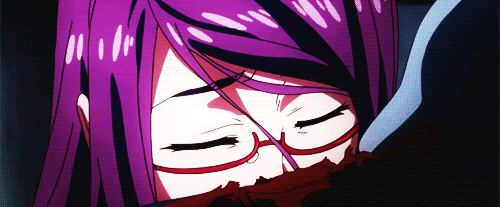
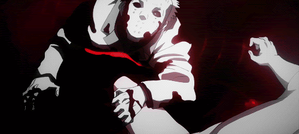

Ghoul Characters
HOME
Ghoul in Tokyo Ghoul
-
Physical Characteristics: Ghouls appear mostly human but have distinct
features such as kagune (predatory organs) and kakuja (advanced forms of
kagune). They also have unique eye traits, including black sclera and
varied iris colors.
-
Diet and Behavior: Ghouls are carnivorous and primarily feed on human
flesh. This need drives much of their behavior and creates conflict with
humans, who are unaware of their existence and would view them as
monsters.
-
Reproduction and Life Cycle: Ghouls are born as ghouls and do not
transform from humans. However, a human can become a ghoul through an
organ transplant from a ghoul, leading to a "half-ghoul" state.
-
Powers and Abilities: Ghouls possess enhanced strength, speed, and
regenerative abilities. Their kagune serves as a powerful weapon, making
them formidable opponents.
-
Society and Culture: Ghouls have an underground society with their own
social structures and cultural norms. They often form factions or
organizations with specific goals and conflicts.
Tokyo Ghoul Characters: Powers and Abilities
Ken Kaneki

Powers and Abilities:
-
Kagune: Kaneki's kagune is of the Rinkaku type, characterized by
multiple, tentacle-like appendages used for combat and defense.
-
Kakuja: An advanced form of kagune that provides additional armor and
enhanced offensive capabilities.
-
Enhanced Physical Abilities: Superhuman strength, speed, and agility.
-
Regeneration: Rapid healing from injuries due to ghoul physiology.
Touka Kirishima

Powers and Abilities:
-
Kagune: Touka's kagune is of the Rinkaku type, known for its sharp,
tentacle-like extensions used in combat.
-
Enhanced Physical Abilities:Enhanced strength and agility typical of
ghouls.
Tatara

Powers and Abilities:
-
Kagune: Tatara's kagune is of the Ukaku type, which manifests as
wing-like appendages used for rapid, long-range attacks.
-
Strategic Combat Skills: Known for his calm demeanor and tactical
prowess in battles.
Noro

Powers and Abilities:
-
Kagune: Noro's kagune is of the Rinkaku type, characterized by its
destructive power and versatility.
-
Immortality: Noro demonstrates an extreme level of regeneration,
appearing nearly immortal.
Eto Yoshimura

Powers and Abilities:
-
Kagune: Eto's kagune is of the Ukaku type, known for its high-speed,
long-range attacks.
-
Enhanced Intelligence: Highly intelligent and manipulative, with
significant influence in the ghoul society.
Rize Kamishiro

Powers and Abilities:
-
Kagune: Rize's kagune is of the Rinkaku type, which provides powerful,
extending appendages used in battle.
-
Enhanced Physical Abilities: Superhuman strength and regenerative
capabilities.
Yakumo Oomori

Powers and Abilities:
-
Kagune: Yakumo Oomori's kagune is of the Rinkaku type, known for its
large, powerful tentacles.
-
Enhanced Strength: Extremely strong and durable, capable of overwhelming
opponents with brute force.